Visual Studio Code Debugger: Python Scripts¶
Overview¶
iTest.Pro includes an extension for Visual Studio Code (a.k.a. "VS Code") that allows for editing and debugging Python scripts. This guide provides support and instructions on how to debug Python scripts on a running iTest system as it executes the scripts during actual use.
|
 |
NOTE: |
For the purposes of this guide, Solution.Demo and an example Python script (Dmo1ExamplePy1.py) will be used to illustrate the steps involved in this process. |
Assumptions:
- iTest 4.2 or later is installed.
- Visual Studio Code is installed.
General Steps¶
The following steps describe the general process to debug a Python script using Visual Studio Code:
- Modify Python Script.
- Configure Visual Studio Code for Debugging.
- Add Python Call to VCL in iTest.
- Attach Visual Studio Code to PythonEngine.
Modify Python Script¶
To modify a Python script using Visual Studio Code, do the following:
- Open the $SYSTEMDIR\Solution.Demo\PythonScripts folder by selecting File > Open Folder in Visual Studio Code.
- Open the Python script file (e.g., Dmo1ExamplePy1.py).
Dmo1ExamplePy1.py File
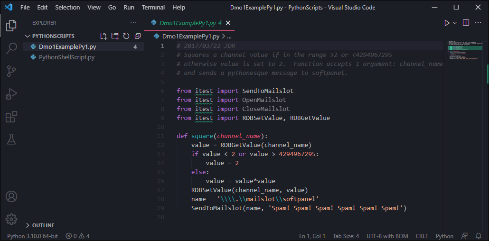
- After the import statements at the top of the file, add the "import debugpy" line.
from itest import SendToMailslot
from itest import OpenMailslot
from itest import CloseMailslot
from itest import RDBSetValue, RDBGetValue
import debugpy
- Add the "debugpy.breakpoint()" line as the first line of the square function.
def square(channel_name):
debugpy.breakpoint()
value = RDBGetValue(channel_name)
- Save these changes.
Modified File
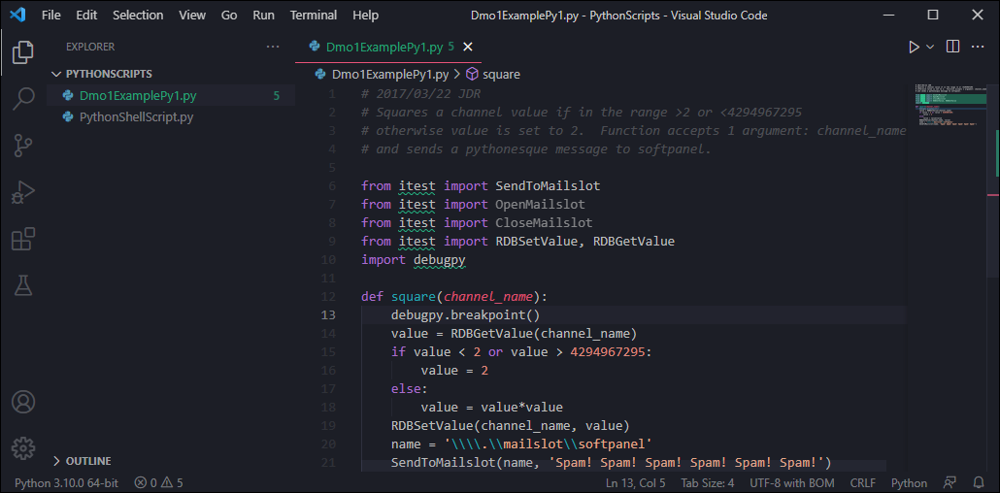
Configure Visual Studio Code for Debugging¶
Visual Studio Code will need to be configured to allow connection to the running iTest Python instance, PythonEngine.exe. Make sure the modified Python script file is open in Visual Studio Code.
- In Visual Studio Code, click Run > Add Configuration.
Add Configuration
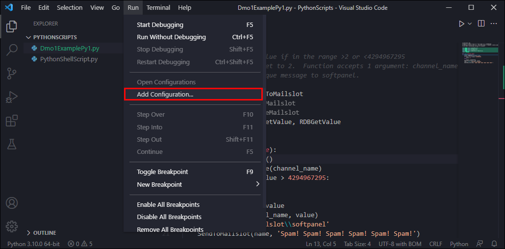
- Select Attach using Process ID. This should create a launch.json file with a configuration allowing you to attach Visual Studio Code to a Python instance by selecting a running process.
Attach Using Process ID
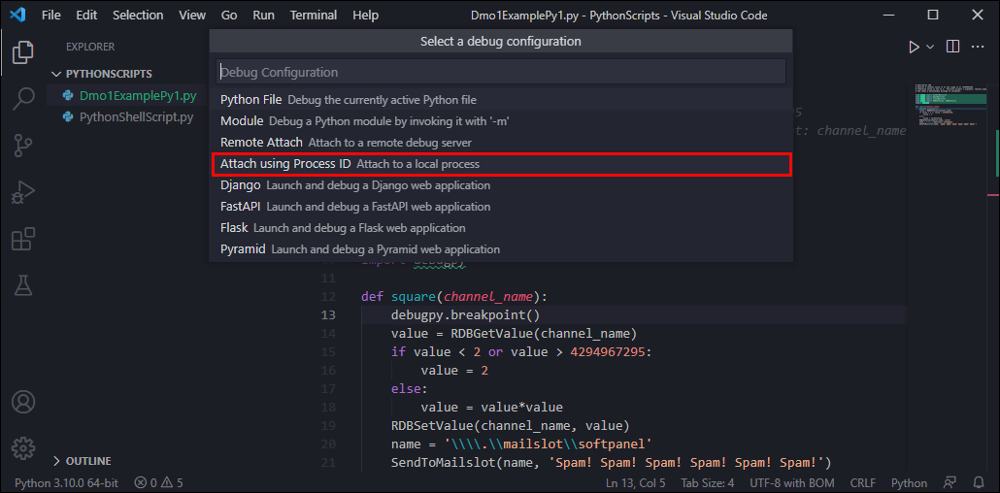
launch.json File
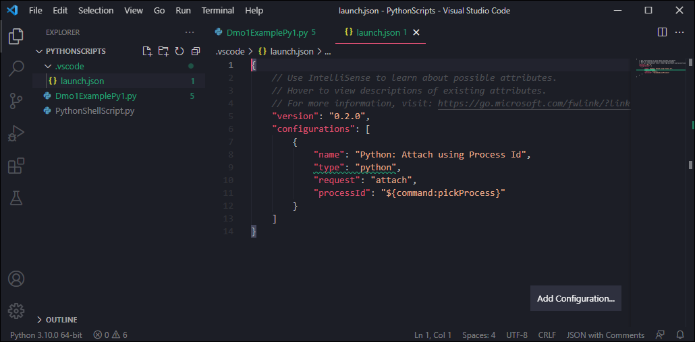
- Click File > Save to save the launch.json file.
- Leave Visual Studio Code running.
Add Python Call to VCL in iTest¶
In order to call the Python square function defined in the Python script, VCL code must be added to the iTest procedure.
- Open the Procedure file (e.g., Try.tsc) in Test Manager.
- In this file, after the MESSAGE line sending a $PROMPTER message to Softpanel, add the following line:
+0.0 PYEXEC "Dmo1ExamplePy1 square(Counter1)", Counter2, 300
- Save this change, perform a Build, and verify there are no errors. Close Test Manager if there are no errors.
Modified Procedure
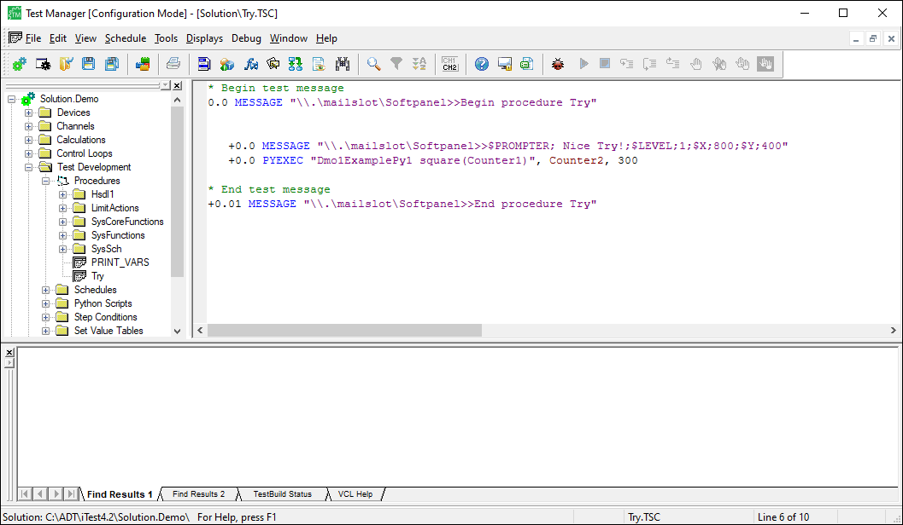
Attach Visual Studio Code to PythonEngine¶
To debug the PYEXEC call to Python that was added, Visual Studio Code must be added to PythonEngine.
- Open the solution (e.g., Solution.Demo) in iTest and wait for it to fully load.
- In Visual Studio Code, click the Run and Debug button on the left.
Run and Debug Button
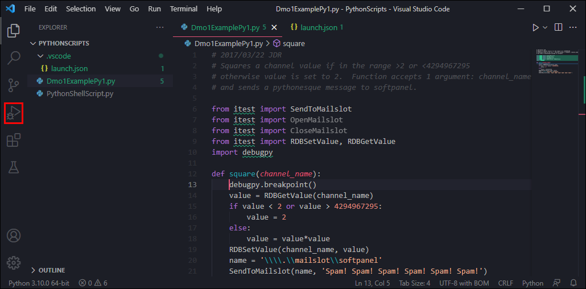
- At the top of the screen, select the Python: Attach using Process Id configuration, and then click the green triangle to the left of it.
Select Configuration
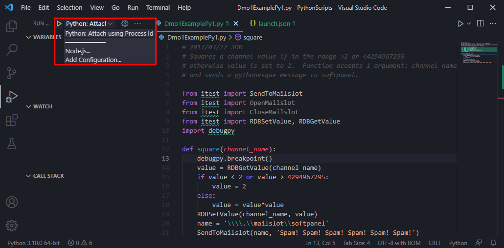
- Select the process to attach Visual Studio Code to. iTest uses PythonEngine.exe, so select that one from the list of running processes on the machine. It will take a few seconds for Visual Studio Code to fully attach to PythonEngine.exe. When Visual Studio Code is attached, an electrical cord plug symbol ( ) will display and the status bar will change colors, indicating that Visual Studio Code will be ready to debug the iTest Python scripts.
Select PythonEngine
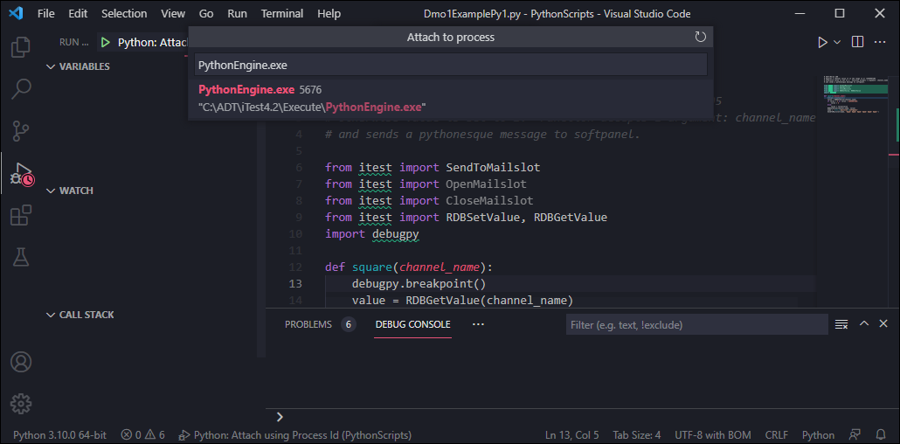
Visual Studio Code Attached
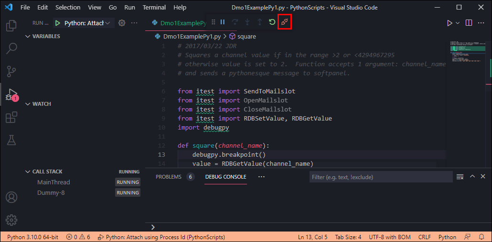
- Once Visual Studio Code is attached, start the modified procedure (e.g., Try.tsc).
- After the "PYEXEC ()" command is called by iTest, Visual Studio Code should be stopped on the line after the "debugpy.breakpoint()" line added earlier.
Stopped Line
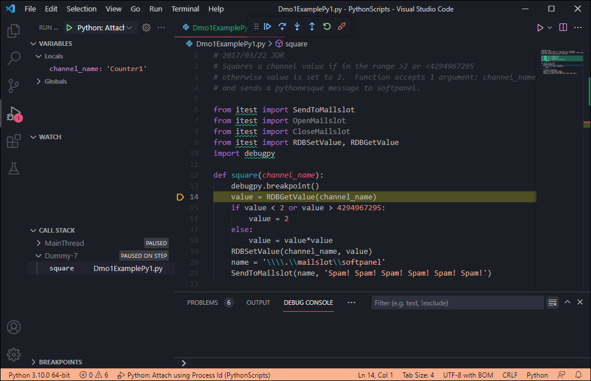
If Visual Studio Code does not appear to be stopped at this line, minimize the Visual Studio Code window then restore it. Visual Studio Code should now be stopped on the "value = RDBGetValue(channel_name)" line of Dmo1ExamplePy1.py. This is due to a bug with version 1.62.2 of Visual Studio Code; however, there may be other versions with this bug.
Now, you can use the standard debugging features of Visual Studio Code to debug this script. You can view local variables, step through code, etc.
Debug Active Python Script¶
Alternatively, you can debug the currently active Python script file using Visual Studio Code.
- Start iTest so shared memory is loaded.
- In Visual Studio Code, open the $SYSTEMDIR\Solution.Demo\PythonScripts folder by selecting File > Open Folder.
- Open the Python script file (e.g., Dmo1ExamplePy1.py).
- Add
square("voDmo1Ch5") to the Python script file. This is to ensure that the function is called since it is normally called from iTest VCL code. Do not indent this line, and remember to remove it before saving.
Add Line
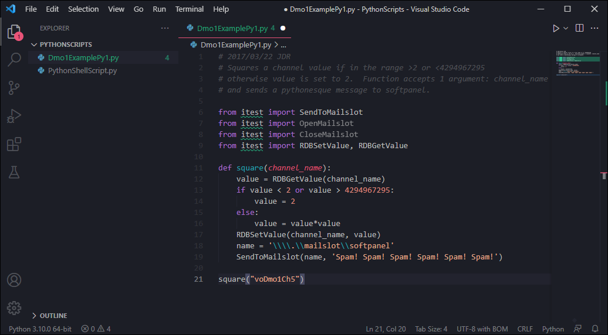
- Create two breakpoints to demonstrate the code flow.
- Click on Run > Start Debugging. Choose Python File: Debug the currently active Python file from the drop-down list that appears.
Python File: Debug the currently active Python file
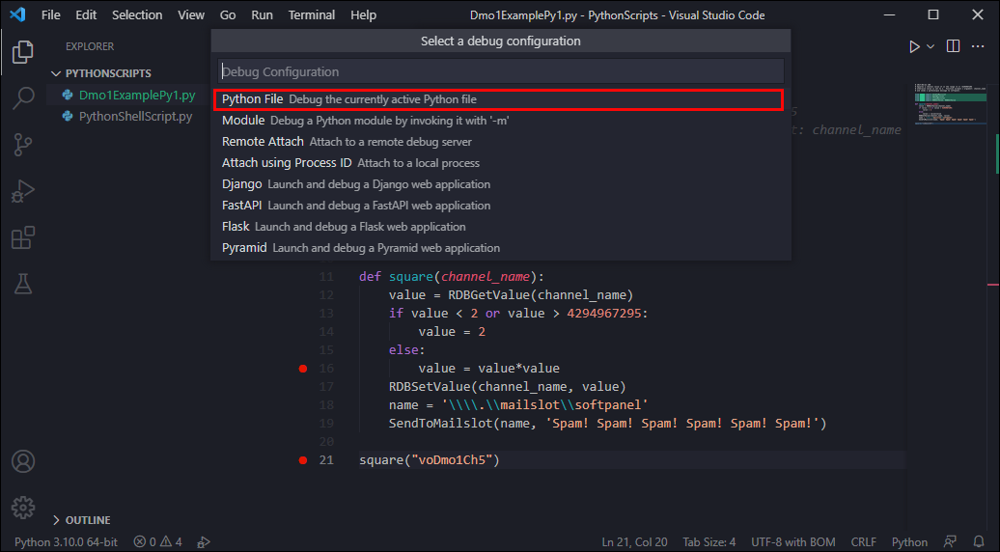
The debugger starts and stops at the breakpoint on line 21. Click on Continue (F5) to continue execution, enter the square function, and stop at the next breakpoint on line 16. Click on Continue (F5) to continue execution of the script. The voDmo1Ch5 channel can be seen to update in iTest each time the script is executed.